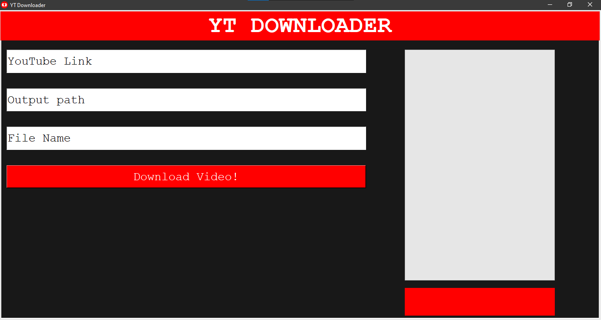

YT Downloader is an app where you can download YouTube videos using the links of the videos. This app was made using Python and Inno Setup. This app is made by Atharva Mishra or YamiAtem on GitHub.
To use this app fist you need to copy and past the link into the first entry box with "YouTube Link" written inside it.Then put the directory where you want the downloaded video to be example: "C:\Users\User\Downloads". Then put the file name you want for the downloaded video. Finally, click on the download button and wait for the video to be downloaded.

If you want to make apps like this here are some things you need to know or have: